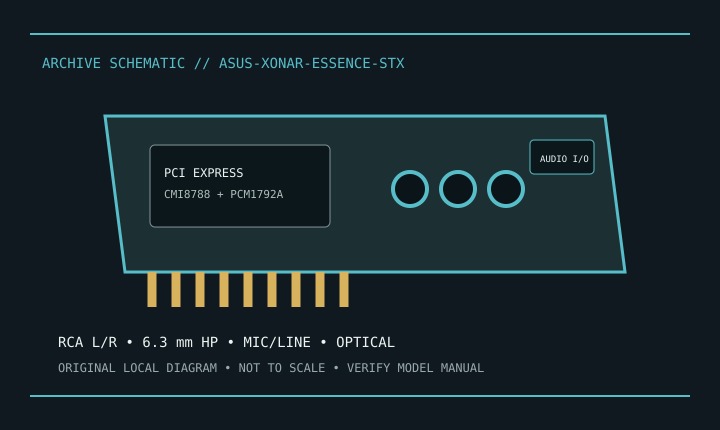

[ INDIVIDUAL MODEL // SOUND HARDWARE ]
ASUS Xonar Essence STX
Original Xonar Essence STX PCIe x1 stereo DAC card; distinguish it from STX II and the PCI Xonar Essence ST.

Model-specific specifications
| Exact model / identity | Original Xonar Essence STX PCIe x1 stereo DAC card; distinguish it from STX II and the PCI Xonar Essence ST. |
|---|---|
| Audio processor / codec / DAC | ASUS AV200 / C-Media Oxygen HD CMI8788 processor and Burr-Brown PCM1792A stereo DAC, as identified in ASUS model documentation. |
| Channels / resolution / sample rate | Stereo analog output; documented 24-bit playback up to 192 kHz. Headphone is separately amplified; recording limits depend on driver path. |
| Analog and digital ports | RCA stereo line out, 6.3 mm headphone out, 3.5 mm mic and line inputs, optical S/PDIF through shared digital/line-output connector. |
| Slot / host interface | PCI Express x1. Do not confuse with the PCI Xonar Essence ST. |
| Operating-system support | ASUS documentation lists Windows XP, Vista and 7-era software/driver support. Current Windows releases are not guaranteed; use the archived support listing. |
Compatibility & preservation
Legacy drivers/software are the principal constraint. Confirm exact ST versus STX identity, slot clearance and supported driver package.
- Photograph the card label, board revision, bracket connections and included accessories before service.
- Retain the exact driver, firmware and operating-system version known to work with this model.
- Confirm slot fit, connector pinout, breakout hardware, channel mode and supported sample rate before integration.
Manufacturer sources
- ASUS Xonar Essence STX — official support and driversManufacturer product, technical specification, or model manual source.
- ASUS Xonar Essence STX — official manual listingManufacturer product, technical specification, or model manual source.